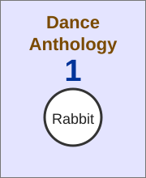
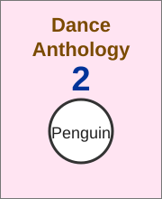
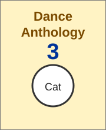

Цей малюнок знаходиться зліва і
текст вирівнюється по лівій границі.
Ефект досягається без таблиці

Цей малюнок розміщений ліворуч і
текст вирівнюється по центру.
Ефект досягається без таблиці

Цей малюнок знаходиться
справа і текст вирівнюється по
правій межі. Ефект досягається без
таблиці